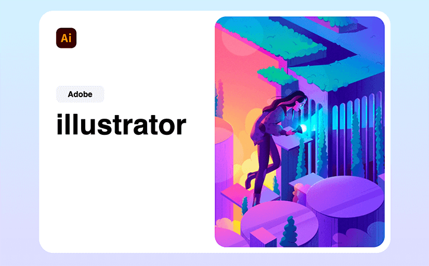

Pour cet exercice vous devez compléter une mise en page déjà entamée d’un écran de démarrage du logiciel Adobe Illustrator.
Aperçu du résultat 👇

Matériel
Pen de départ
Couleurs 🎨
#f3f5f7
Requis
Faites en sorte que l'élément .wrapper ne devienne jamais moins large que 600px, qu'il soit centré horizontalement ↔️ et qu'il est un espace vide de 20px verticalement ↕️ grâce aux marges extérieures.
Attribuez une largeur équivalente à la moitié du .wrapper à la zone de texte. Pensez à ajuster le CSS et le HTML afin que le texte et l'illustration puissent s'afficher un à côté de l'autre sur la même ligne.
Faites en sorte qu'une marge intérieure de 20px soit ajoutée à la zone de texte sans pour autant modifier sa largeur réelle.
Modifiez l'apparence du badge Adobe afin de lui attribuer un fond gris, une taille de police de 14px, des coins arrondis de 8px, ainsi qu'une marge intérieure d'une demi-lettre verticalement ↕️ et d'une lettre et demi horizontalement ↔️.
Attribuez au titre une taille de police de 50px et une marge verticale de 15px.
Positionnez le logo d'Illustrator à 20px du haut et de la gauche du .wrapper et attribuez-lui une largeur équivalente à 6% de la zone de texte.
Notes de cours 📚
Display
Padding
Margin
Box-sizing